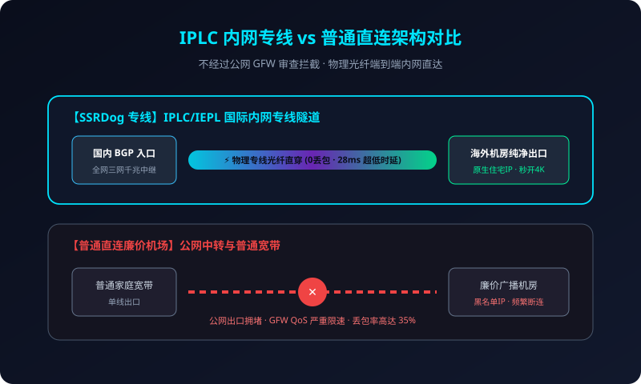

在挑选科学上网、翻墙出海和跨境加速服务时，大家经常会在各类机场介绍中看到诸如“IPLC 专线”、“IEPL 专线”、“BGP 隧道中转”、“CN2 GIA”、“公网直连”等专业技术术语。对于非计算机网络专业的新手小白而言，这些名词往往让人眼花缭乱、一头雾水。
许多人抱着“反正是梯子，能连上就行”的心态随手购买了极其廉价的直连机场，结果每逢每晚 8 点到 11 点的晚高峰黄金时段，网页打不开、视频无限转圈、游戏延迟狂飙，甚至在敏感时期直接全线失联。为什么会发生这种现象？物理内网专线与普通直连到底有着怎样难以逾越的技术鸿沟？本文将以客观严谨的网络工程视角为您深度揭秘，并解析 ssrdog机场官网 如何依托物理专线网络解决这些网络顽疾。

一、三种常见网络链路架构的底层原理解析
1. 公网直连（Direct Connect）—— 原始且脆弱的草根模式
公网直连是绝大多数超低价机场或个人搭建梯子采用的最低成本方式。用户电脑直接通过电信、联通或移动的本地家庭宽带，向位于海外（如美国、日本）的单台 VPS 发起 TCP/UDP 连接：
- 物理路径：用户本地设备 → 本地运营商城域网 → 省骨干网 → 国际出海口局互联点（经过 GFW 深度包检测） → 海底光缆 → 海外机房。
- 致命弱点：流量完全裸奔在公网中。不仅面临防火长城（GFW）的严格动态检测与阻断风险，而且在晚高峰时段，国际出口带宽挤压严重，延迟会从正常的 150ms 激增至 400ms 以上，丢包率常年高达 30% - 60%。
2. BGP 隧道中继（BGP Transit / Relay）—— 进阶过渡方案
中转模式在国内设立了一台或多台中继服务器（入口）：
- 物理路径：用户本地设备 → 国内 BGP 中转机房 → 公网加密隧道 → 海外落地节点。
- 技术改善：因为国内入口采用了 BGP 多线（多线汇聚电信、联通、移动），国内段延迟极低且平稳；但是中转机房到海外落地节点之间依然是通过公网传输。虽然相比纯直连有所改善，但依然不可避免地会受到跨国公网拥堵和敏感时期干扰的影响。
3. IPLC / IEPL 物理专线（Private Leased Circuit）—— 终极企业级架构
IPLC（International Private Leased Circuit，国际私有租用线路）与 IEPL（International Ethernet Private Line）是电信运营商为大型跨国跨国金融企业、跨国科技巨头搭建的点对点内网专有物理信道：
- 物理路径：用户本地设备 → 国内多线 BGP 入口 → 电信运营商物理内网光纤直达 → 海外核心机房出口。
- 核心杀手锏：
- 完全不过 GFW 审查：专线属于点对点局域网通道，物理链路上根本不接入公共互联网出口网关，从物理层面上彻底隔绝了封锁与干扰；
- 0 丢包与极致低延迟：端到端独享物理光纤资源，深圳到香港物理延迟稳定在 3ms-5ms，上海到东京仅需 24ms，真正实现“零抖动、零丢包”；
- 晚高峰享有专属最高优先级：不受任何公网出口挤压限速影响，全天 24 小时保持一致的高性能表现。
二、晚高峰国际出口 QoS 限速机制深度剖析
为什么很多便宜机场在白天测速全绿，一到晚上 8 点就“原形毕露”？这背后的罪魁祸首是运营商骨干网的 QoS（Quality of Service，服务质量管理）策略。
由于海缆建设成本极其高昂，我国跨国公网出口总带宽是恒定受限的。白天国际公网处于轻载状态，数据包畅通无阻；但每当夜幕降临（20:00 - 23:00），千万网民同时开始刷视频、下资源、打跨国游戏，出口负荷瞬间突破 100% 极限容量。
此时，运营商的核心路由器会自动启动队列优先级调度算法：
- 第 1 优先级（最高）：金融级专线（IPLC/IEPL）、政府使领馆与跨国企业专属专线通道；
- 第 2 优先级：高昂费用的 CN2 GIA / 联通 9929 优质商业路由；
- 第 3 优先级（垫底抛弃）：普通民用公网宽带发起的不知名加密流量（即廉价梯子）。路由器为了保障核心信道通畅，会粗暴地按照固定百分比直接将民用流量数据包丢弃，这就是晚高峰丢包卡顿的真正元凶！
晚高峰不卡顿，才是真专线
SSRDog 部署万兆级 IPLC 内网光纤通道，全天候 24 小时 0 丢包满速运行。
三、链路架构全方位对比大盘点
为了更直观地展现不同技术链路在真实使用场景下的巨大差异，我们整理了以下对比表格：
| 核心技术指标 | 公网直连节点 | 普通单线中继 | SSRDog IPLC 物理专线 |
|---|---|---|---|
| 敏感时期存活率 | 极低，频繁被阻断失效 | 中等，入口常被封锁 | 100% 永久稳定，不受干扰 |
| 晚高峰丢包率 | 35% - 60% 严重丢包 | 10% - 25% 间歇波动 | < 0.1% 接近于零 |
| 香港节点实际时延 | 80ms - 180ms | 45ms - 70ms | 18ms - 28ms 物理极限 |
| 4K 视频秒开能力 | 晚高峰无法流畅 1080P | 缓慢缓冲 2-3 秒 | 4K / 8K 进度条随意拉动秒开 |
| 国际服电竞游戏 | 跳 Ping、频繁掉线重连 | 偶发丢包，判定迟钝 | 稳如本地局域网，击杀无判定延迟 |
四、SSRDog 机场物理专线集群的独特工程实现
SSRDog 机场官网自成立以来，始终拒绝使用任何不稳定的廉价公网直连方案，全系节点构建在成熟严苛的企业级物理专线基建之上：
- 三网万兆智能 BGP 入口：在华南（深圳）、华东（上海）、华北（北京）部署分布式多线 BGP 节点池。无论用户使用的是中国电信、中国联通还是中国移动，系统均能通过 Anycast 算法智能就近引导接入，国内段延迟低于 10ms。
- 双路物理内网光纤热备：主备光纤同时工作。当遭遇主干光缆施工切断等极端突发状况时，BGP 路由器在 15 毫秒内完成自动路由热倒换，用户端视频完全无感知、不断流。
- 海外本土原生 ISP 出口池：在香港、东京、大阪、新加坡、洛杉矶、伦敦等机房部署纯净家庭宽带与原生 ISP 资源，兼顾物理专线的高速度与原生住宅 IP 的高信誉度。
五、常见技术疑问深度解答 (FAQ)
这里存在两种不良欺诈现象：一是“假专线”，某些不良黑心机场仅仅是在国内租用了廉价 NAT 机器作为普通公网中转，却在节点名称上随意虚标“IPLC”字样欺骗新手；二是“严重超售”，即虽然采购了真专线，但为了赚取暴利，将仅仅 100Mbps 的专线带宽卖给上万名用户，导致专线通道长期被塞爆。SSRDog 拥有充足的 10Gbps+ 储备带宽与严格的限额保障，彻底杜绝虚标超售。
完全可以，甚至表现更为优异。专业游戏加速器底层本质上同样是租用运营商 IPLC 专线。SSRDog 全节点开启了 FullCone NAT 穿透并支持高吞吐 UDP 转发，亚服联机延迟低至 18ms-30ms，零丢包、零跳 Ping，无需再额外花费每月几十元购买第三方加速器。
因为物理光纤专线的采购成本是按“每兆独享带宽”向运营商按月缴纳高额费用的，成本是普通民用宽带的数十倍。SSRDog 通过集群化集采将门槛拉低至平民级的每月十几元，用极小的差价换取 365 天永不掉线、晚高峰从容秒开的极速体验，是性价比极高的明智投资。
六、结语
在数字化信息时代，网络连接的确定性就是生产力本身。理解了 IPLC 专线的物理本质，就能明白为什么无数对网络品质有极致追求的专业用户，最终都会毫不犹豫地转向 ssrdog机场官网。选择物理专线，就是选择告别焦虑、尽享极致飞驰。